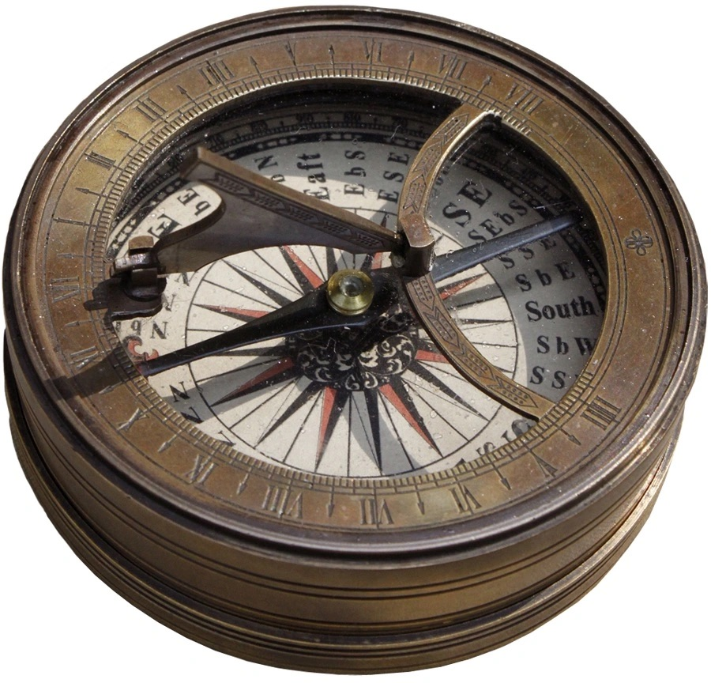
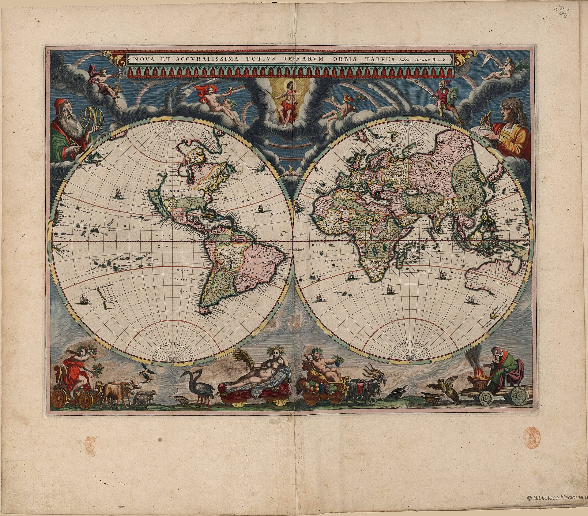

Kompasy

Rodzaje kompasów
Magnetyczny kompas: Podstawowym rodzajem kompasu używanym w średniowieczu był magnetyczny kompas. Składał się z igły magnetycznej, która wskazywała kierunek północy magnetycznej.
Astrolabia kompasowa: Astrolabia kompasowa to połączenie tradycyjnej astrolabii z magnetycznym kompasem, umożliwiające jednoczesne określanie kierunku geograficznego i pomiaru kątów między gwiazdami a horyzontem.
Budowa kompasu
Igła magnetyczna: Centralnym elementem kompasu był magnetyczny wskaźnik w postaci igły, która była umieszczona na ruchomej osi.
Podziałka: Kompas posiadał podziałkę umożliwiającą odczytanie kąta między igłą a wybranym kierunkiem.
Pudełko kompasu: Magnetyczna igła była umieszczana w specjalnym pudełku, zamykanym szkłem lub przezroczystym materiałem, aby chronić ją przed wpływem warunków atmosferycznych.
Zastosowanie kompasów w podróżach odkrywczych
Kompasy były niezwykle cenne podczas wielkich odkryć, umożliwiając żeglarzom utrzymanie kursu i określanie swojej pozycji geograficznej.
Rozwój kompasów
Wraz z eksploracją geograficzną i rozwojem technologii nawigacyjnych, kompasy stały się nieodłącznym elementem wyposażenia na morzu, umożliwiając żeglarzom bezpieczne przemierzanie odległych wód i odkrywanie nowych lądów.
Powrót do góry
Żeglarstwo

Żeglarstwo i statki
Karawela: Karawela, innowacyjna jednostka pływająca z okresu wielkich odkryć, zrewolucjonizowała żeglarstwo średniowieczne. Charakteryzowała się trójnamiotowymi żaglami, co znacznie poprawiło zwrotność statku i umożliwiło bardziej skuteczne przemieszczanie się na otwartym morzu. Karawela była kluczowym narzędziem dla odkrywców, umożliwiając eksplorację nowych szlaków handlowych i odkrywanie odległych krain.
Wykorzystanie kompasów: W trakcie podróży odkrywczej, magnetyczne kompasy były nieodzownym elementem wyposażenia na karawelach. Żeglarze polegali na tych przyrządach nawigacyjnych do utrzymania właściwego kursu i unikania zgubienia się na otwartym morzu. Dzięki kompasom odkrywcy mogli precyzyjniej planować trasy podróży, co wpłynęło na sukces ich wypraw.
Mapy i nawigacja: Oprócz kompasów, odkrywcy korzystali z rozwiniętych map i narzędzi nawigacyjnych. Dzięki postępowi w technologii kartograficznej, jak również umiejętności korzystania z astrolabii, żeglarze byli w stanie lepiej zrozumieć topografię nowych obszarów i bezpiecznie nawigować w nieznanym terenie.
Zalety karawel: Karawela, dzięki swojej konstrukcji, była bardziej odporna na trudne warunki morskie. Zastosowanie trójnamiotowych żagli umożliwiało skuteczniejsze żeglowanie pod wiatr, co zwiększało manewrowość statku. To sprawiało, że karawele były doskonałymi narzędziami dla śmiałych żeglarzy pragnących docierać do odległych miejsc, stając się symbolami ery wielkich odkryć.
Powrót do góry
Technologie kartograficzne

Technologie kartograficzne
Mapy: Eksploracja geograficzna w średniowieczu korzystała z coraz bardziej precyzyjnych map, które były kluczowym narzędziem dla odkrywców. Mapy zawierały informacje o topografii, liniach brzegowych i geograficznych cechach terenu, umożliwiając żeglarzom lepsze zrozumienie otaczającego świata. Postęp w technologii kartograficznej pozwolił na tworzenie bardziej dokładnych i szczegółowych map, co z kolei ułatwiało planowanie podróży i eksplorację nowych obszarów.
Astrolabia i nawigacja astronomiczna: Odkrywcy wykorzystywali astrolabię, przyrząd astronomiczny, do pomiaru kątów między gwiazdami a horyzontem. To narzędzie było nieocenione w nawigacji astronomicznej, umożliwiając określanie szerokości geograficznej i precyzyjne określanie położenia na morzu. W połączeniu z kompasem stanowiło skuteczną kombinację przyrządów nawigacyjnych.
Rozwój sztuki kartograficznej: Sztuka kartografii w średniowieczu doświadczała rozwoju, a kartografowie zdobywali coraz większą wiedzę na temat układu współrzędnych, skali i projekcji map. To pozwalało na bardziej precyzyjne przedstawianie różnych obszarów geograficznych na mapach, co było istotne dla odkrywców podczas planowania wypraw i interpretowania nowych odkryć.
Wprowadzenie nowych symboli i znaczników: W miarę postępu w technologii kartograficznej, mapy stawały się bardziej złożone i zawierały nowe symbole i znaczniki. To pozwalało na dodawanie informacji o przyrodzie, klimacie czy lokalnej faunie, co było szczególnie ważne dla odkrywców poszukujących zasobów naturalnych w nowych regionach.
Komunikacja

Komunikacja
Dymnice: W erze wielkich odkryć, kiedy podróżnicy byli oddzieleni od swoich baz lub innych statków, korzystano z dymnic jako środka komunikacji na morzu. Dymnica generowała kolorowy dym, co stanowiło skuteczny sposób przekazywania prostych sygnałów na znaczne odległości. Odkrywcy używali dymnic do informowania o różnych warunkach, zagrożeniach lub po prostu w celu nawiązania kontaktu z innymi jednostkami.
Wysyłanie listów i dokumentów: Pomimo braku dzisiejszych środków komunikacji, odkrywcy utrzymywali łączność poprzez wysyłanie listów i dokumentów za pomocą posłańców, gołębi pocztowych czy innych dostępnych środków. Ta forma komunikacji była bardziej czasochłonna niż obecnie, ale nadal odgrywała kluczową rolę w wymianie informacji, planowaniu podróży i raportowaniu odkryć.
Używanie sygnałów świetlnych: Kiedy warunki atmosferyczne uniemożliwiały korzystanie z dymnic, odkrywcy sięgali po sygnały świetlne. Latarnie, ogniska czy lustra służyły do wysyłania migocących świateł jako formy komunikatu. Te sygnały świetlne były wykorzystywane szczególnie w nocy lub w warunkach ograniczonej widoczności.
Korespondencja z lokalnymi społecznościami: Odkrywcy nawiązywali kontakt z lokalnymi społecznościami, wymieniając towary, informacje i doświadczenia. Tłumacze, mediatorzy i komunikatorzy pełnili kluczową rolę w ułatwianiu komunikacji między różnymi kulturami. Ta wymiana kulturalna miała wpływ na zrozumienie nowych obszarów geograficznych i handlowych relacji.
Powrót do góry
Przyrządy nawigacyjne

Przyrządy nawigacyjne
Kwadranty: Kwadranty były ważnymi przyrządami nawigacyjnymi używanymi przez odkrywców. Te proste instrumenty pomagały w pomiarze kątów pomiędzy gwiazdami a horyzontem, co było istotne przy określaniu położenia na morzu. Kwadranty umożliwiały żeglarzom określanie kierunku północy, a tym samym utrzymanie kursu podczas długich podróży.
Kątomierze: Kątomierze były używane do pomiaru kątów między ciałami niebieskimi a horyzontem. Te przyrządy pomagały w precyzyjnym określaniu szerokości geograficznej i były istotne w nawigacji astronomicznej. Kątomierze umożliwiały odkrywcom dokładne wyznaczanie swojej pozycji na podstawie obserwacji nieba.
Astrolabia: Astrolabia były używane zarówno jako przyrząd nawigacyjny, jak i astronomiczny. Pomagały w pomiarze kątów między gwiazdami a horyzontem, a także w określaniu wysokości gwiazd i Słońca nad horyzontem. Astrolabia były skomplikowanymi instrumentami, ale ich zastosowanie było nieocenione w nawigacji morskiej.
Sztuka nawigacji astronomicznej: Odkrywcy rozwijali umiejętności w dziedzinie nawigacji astronomicznej, wykorzystując przyrządy takie jak astrolabia. Obserwacje gwiazd, Słońca i innych ciał niebieskich pozwalały im określać szerokość geograficzną, a tym samym precyzyjnie określać swoją pozycję na oceanie.
Zastosowanie przyrządów w praktyce: Odkrywcy często korzystali z kombinacji różnych przyrządów nawigacyjnych, dostosowując je do zmieniających się warunków i celów podróży. Umiejętność obsługi tych instrumentów była kluczowa dla skutecznej nawigacji przez nieznane obszary geograficzne.
Powrót do góry